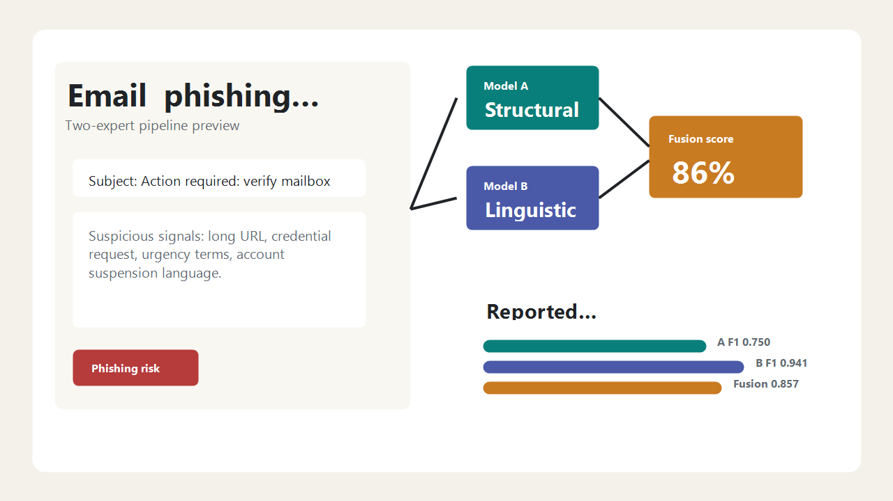

Read the email
Subject and body are combined into the same raw text used by the notebooks.
Saved model pipeline
Paste the subject and body. The website extracts structural signals, converts the text with the saved Word2Vec model, and combines both classifiers using the fusion settings in the models folder.
How it works
The app uses the artifacts in models/. Model A reads handcrafted structure features. Model B reads a 150-dimensional average Word2Vec representation of the cleaned email text. The final score is the saved weighted fusion of both phishing probabilities.

Subject and body are combined into the same raw text used by the notebooks.
The server counts URLs, email addresses, IPs, HTML tags, punctuation, uppercase ratio, risk words, replies, and subdomains.
The text is cleaned, stop words are removed, and known tokens are averaged from word2vec_150d.joblib.
fusion_weights.json controls the structural weight, text weight, and decision threshold used by the website.
Evaluation
These values summarize the current report files. The live website uses the model artifacts and fusion JSON currently saved in models/.
Project workflow
The website mirrors the local project pipeline, from data preparation through model fusion and presentation.
data_preprocessing.ipynb standardizes the raw email datasets and creates cleaned text.
model_a/feature_extraction.ipynb creates the 12 numeric features used by Model A.
model_a/fit_and_validate.ipynb trains and saves the structural classifier.
model_b/data_vectorization.ipynb trains or loads the Word2Vec text representation.
model_b/fit_and_validate.ipynb trains the classifier on 150-dimensional document vectors.
website/server.py loads the saved artifacts and exposes the local analysis API.